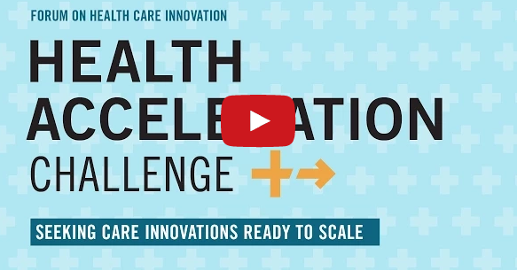

Harvard Business School and Harvard Medical School proudly announce the finalists of the Health Acceleration Challenge: Bloodbuy, I-Pass, Medalogix, and Twine! You can see a video of the finalists below.
The Health Acceleration Challenge is a “scale up” competition that focuses on compelling, already-implemented health care solutions and helps them to grow and increase their impact through powerful networking and funding opportunities.
The four finalists will share the $150,000 Cox Prize, have an HBS case study written about their innovation and have the opportunity to present at the Forum on Health Care Innovation conference to 150 senior health care executives next April.
The Health Acceleration Challenge received 478 applicants in total and attracted 2,000 visitors from 127 countries. 2,748 participants posted over 2,000 comments on our open application platform.
Video: Health Acceleration Challenge Finalists
 Bloodbuy
|
@Bloodbuy
Bloodbuy
|
@Bloodbuy
Bloodbuy notes that blood is a core commodity of health care. For this reason, the Dallas company built a cloud-based platform that addresses the uneven geographic distribution of available blood supply in real time, enabling price transparency and greater efficiency in a critical health care market.
 I-Pass
|
@IPASSHANDOFF
I-Pass
|
@IPASSHANDOFF
I-Pass uses a multifaceted approach to improve the exchange of information among health care providers by standardizing the patient hand-off process at every change of shift. It has already yielded a 30% reduction in medical errors resulting from patient transfer. The enterprise is led by the I-Pass Executive Council, a group of six individuals from a number of hospitals across the country, including Boston Children’s/Harvard Medical School, St. Christopher’s Hospital for Children/Drexel University College of Medicine, and the Benioff Children’s Hospital/University of California San Francisco.
 Medalogix
|
@medalogix
Medalogix
|
@medalogix
The goal of Medalogix is to help provide better quality of life at the end of a patient’s life. The Nashville-based company does this by leveraging predictive analytics to identify patients that are eligible for hospice and then implementing a workflow that allows clinicians to help patients better manage the hospice decision and transfer process, minimizing associated difficulties and costs for all those involved.
 Twine Health
|
@twinehealth
Twine Health
|
@twinehealth
Twine Health is a collaborative care app that allows patients and their doctors to co-create treatment plans for chronic disease, including access to motivational coaches and virtual support. The app’s efficacy has been proven over six years of research at the MIT Media Lab and is currently demonstrating markedly improved outcomes at one-third the cost of regular treatments.
News
Downloads
For press inquiries, please contact info@forumonhealthcareinnovation.org.

Health Acceleration Challenge Launch (VIDEO)
This video introduces the Health Acceleration Challenge from HBS and HMS.
This video introduces the Health Acceleration Challenge from HBS and HMS.
Health Acceleration Challenge Webinar (VIDEO)
An informational webinar about the Health Acceleration Challenge.
An informational webinar about the Health Acceleration Challenge.
 Health Acceleration Challenge Flyer (PDF)
Health Acceleration Challenge Flyer (PDF)Details for potential applicants.
 Press Kit (ZIP)
Press Kit (ZIP)Challenge information and logos.
 5 Imperatives (PDF)
5 Imperatives (PDF)Key insights from the Forum's first conference on health care innovation.
About the Forum on Health Care Innovation
The Forum on Health Care Innovation is a collaboration between Harvard Business School (HBS) and Harvard Medical School (HMS). Its purpose is to unite leading executives, policymakers, and academics in a cross-disciplinary exploration of innovative actions to improve quality, reduce costs, and, ultimately, increase value in the health care industry.
The Forum's initial event was a conference and survey that were summarized in Five Key Imperatives.
In 2014 the Forum launched the Health Acceleration Challenge to identify and promote demonstrated health care innovations, and selected four finalists to share the Cox Prize.
I discovered both the enormous gratitude each one of us has as individuals for health care and the equally enormous frustration any one of us has as a consumer of the health care system. Our challenge is: How can we realize the great magic, and the great benefits, that health care can afford?
We need approaches to the solutions that aren’t just arithmetic and additive, but are in some sense logarithmic. This will require us to reach across historic boundaries and unlock the potential of collaboration across the usual disciplines.
 Richard G. Hamermesh
Richard G. Hamermesh Robert S. Huckman
Robert S. Huckman Barbara J. McNeil, MD
Barbara J. McNeil, MD Joseph P. Newhouse
Joseph P. Newhouse Cara Sterling
Cara Sterling